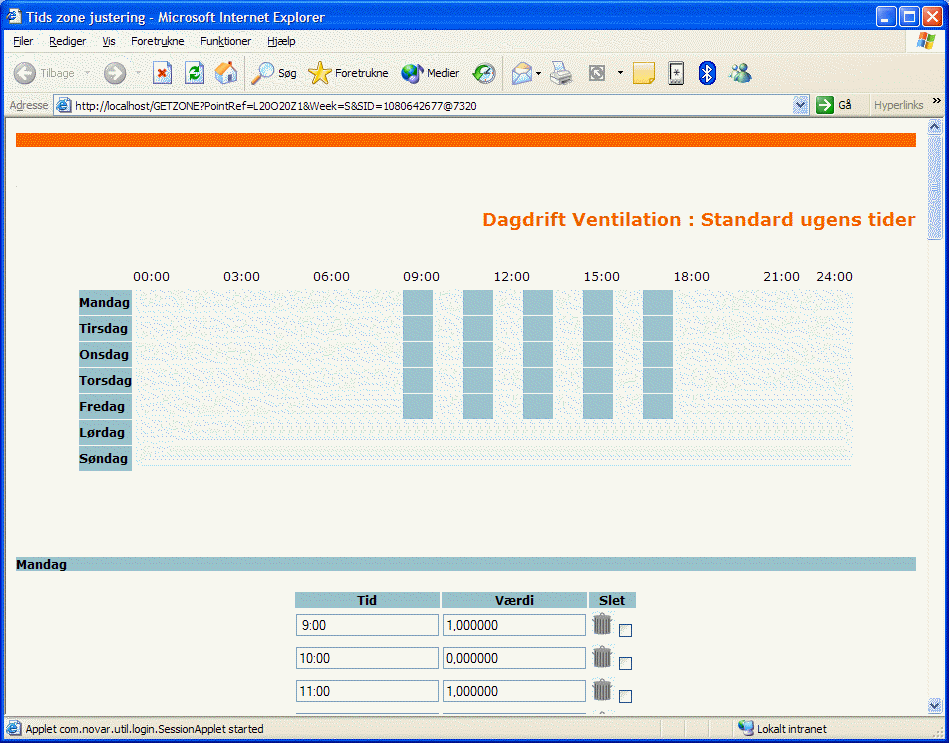

og derefter klikke på ‘Send
justeringer‘.
og derefter klikke på ‘Send
justeringer‘.Driftstider for undercentraler på Trend-systemet er indstillede af de tider, der er defineret af den kalendergruppe, de tilhører, og det er muligt at tilsidesætte disse tider. Man kan overskrive disse tidspunkter. Justering af tiden på denne måde overskriver tidspunkterne angivet af 963’s kalender ved direkte at ændre de tidspunkter, der er gemt i undercentralen.
Sådan justeres en Tidszone:
1 Vis siden med den knap eller det billede, hvormed tidszonen kan justeres, og klik på denne knap eller dette billede.
Eller
Se den tidszone, der skal justeres, i Enhedsoversigten, højreklik på den tidszone, der skal justeres, og vælg ‘Justér Punkt’ fra den menu, der fremkommer.
2 Hvis en tidszone justeres i en undercentral ældre end IQ3, fremkommer en dialogboks, der spørger, hvilke tidspunkter, der skal justeres. Skal den nuværende uge justeres, klik på ‘Idag og de næste 6 dage’. Skal standard tidspunkterne justeres (standard uge), klik på ‘Standard ugens tidspunkter’.
En dialogboks fremkommer, der ligner den vist nedenfor.

3 Gå til den dag, hvor driftstiderne skal ændres.
4 Angiv de ønskede driftstider.
For IQ3-undercentraler angives start- og stoptidspunkterne
for en periode i boksen i kolonnen ‘Tid’. Ved at skifte mellem starttidsværdien
’1’ og stoptidsværdien ’0’ kan man skifte mellem starttider og stoptider.
For at tilføje yderligere en periode klikkes på ‘Skab
ny tidsperiode’, og en yderligere periode tilføjes ved at angive,
om det nye tidspunkt på listen er et start- eller stoptidspunkt. Uønskede
perioder kan fjernes ved at afkrydse () afkrydsningsboksen ved siden af og derefter klikke på ‘Send
justeringer‘.
Bemærk: To perioder bør tilføjes – en til at tænde og en til at slukke.
For IQ3-undercentraler angives start- og sluttidspunkterne for en periode i boksene ‘Start’ og ’Slut’. Skal en periode ikke bruges, indstilles begge tidspunkter til ’24:00’.
5 Hvis driftstiderne er for en bestemt dag, klik på ‘Send justeringer’ i området, der angiver tiderne.
6 Gentag trin (4) og (5) for hver dag.